A pretrained text-to-image flow model, taken apart and put to new
uses: noising and denoising by hand, Euler sampling, classifier-free
guidance, image editing, and two kinds of optical illusion. Then a
small flow-matching model, trained from scratch on MNIST.
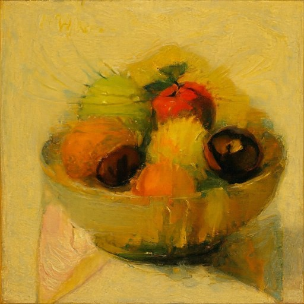
One image, two prompts
Upright“an oil painting of a bowl of fruit”
Rotated 180°“an oil painting of a cat's face”
Every Euler step averages two velocities: one for the upright image
and one for the rotated image with the second prompt
(Part A 3.3).
From noise to image along a straight line
A flow model learns a velocity field. Start from Gaussian noise at
\(t=0\), follow the field, and arrive at an image at \(t=1.\) Training
only needs straight lines between noise and data. The model learns
the average direction of all the lines that pass through each point.
The demo below is that picture in two dimensions. The data is six
Gaussian blobs, two for each of three classes. For this data the
optimal velocity has a closed form. It is the posterior-weighted
average of each blob's velocity, so no network is needed. The same
seeded noise starts every run. Each setting reproduces something
from the image experiments below.
Condition
Euler steps
Dashed circles: one and two standard deviations of the noise.
Colored disks: the data. Thin lines: each sample's Euler path,
colored by the blob it reaches (gray if it reaches none).
Things to try:
1 step sends every sample to the centroid of the
data, the same averaging behind the blurry one-step estimates and
the pure-noise denoiser.
Show training pairs draws straight noise-to-data
lines that cross everywhere. The exact flow's paths never meet at the same point at the same
time, because the velocity at each \((x,t)\) is one average over every
line through it.
A class with w = 7 squeezes each of its blobs
into a thin streak and pushes samples past the data: less variety
and an overshoot, the 2D version of guidance's uniform,
high-contrast portraits.
Time runs from noise to data. \(t=0\) is pure noise and \(t=1\) is a clean image. The model predicts a velocity, not the noise.
Two ways to write guidance. Part A uses \(v_c+w(v_c-v_u)\) with \(w=7\). Part B uses \(v_u+\gamma(v_c-v_u)\) with \(\gamma=5\). They agree when \(\gamma=w+1.\)
Part A
Exploring a pretrained flow model
Every experiment in Part A uses PixNerd-XXL-P16-T2I,
a pixel-space text-to-image flow model that produces 512 × 512 images.
Nothing is trained. Prompts are encoded once with the supplied
model.encode, and the empty string serves as the
unconditional prompt. All runs use float32 on a T4 GPU with base seed 114 (114 to 118 for the five samples),
Euler step \(h=0.02\), and guidance \(w=7\) wherever guidance applies.
Part A 1.1
Noisy training inputs
A training input is a point on the straight line between a noise
sample and a clean image. I used one photograph of the Golden Gate
Bridge throughout Section 1, center-cropped and resized to 512 × 512
with RGB in \([-1,1]\). One noise tensor \(\epsilon\) is drawn and
reused for all three times, so the only thing that changes across
the row is \(t.\)
def interpolate(image, noise, t):
return (1 - t) * noise + t * image
epsilon = noise(SEED)
noisy = {t: interpolate(image, epsilon, t) for t in [.25,.50,.75]}
assert torch.equal(interpolate(image,epsilon,0),epsilon)
assert torch.equal(interpolate(image,epsilon,1),image)
Original \(x_1\).
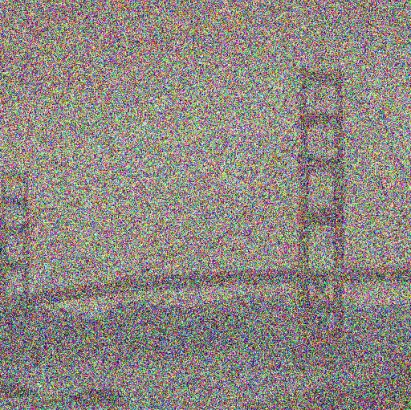
\(t=0.25\): 75% noise.
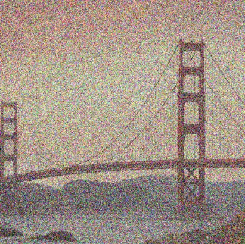
\(t=0.50\).\(t=0.75\).
The image fades in linearly while the noise fades out. Because the
interpolation is not variance-preserving, \(x_t\) is also dimmer and
lower in contrast at middle times. That is why Section 1.2 divides
by \(t\) before blurring.
Part A 1.2
Classical denoising
The classical estimate is \(\hat x_1^{\text{blur}}=G_\sigma(x_t/t).\)
Dividing by \(t\) restores the image's amplitude, but it scales the
noise as well. What is left is \(x_1+\tfrac{1-t}{t}\,\epsilon\), with noise
standard deviation 3, 1, and 1/3 at the three times. For each time I
swept σ ∈ {1, 2, 4, 8, 16} and kept the blur closest to the clean
image in mean squared error.
for t,x in noisy.items():
candidates = {s: gaussian_blur(x/t, [int(6*s+1)]*2, [s,s]) for s in [1.,2.,4.,8.,16.]}
sigma = min(candidates, key=lambda s: ((candidates[s]-image)**2).mean().item())
blurred[t] = candidates[sigma]
The chosen σ halves each time the noise level falls by about three:
8, 4, 2. A wider blur removes more noise and more of the image along
with it. MSE picks the point where the two losses balance. At
\(t=0.25\) the balance point is a smear. The cables and the far tower
are gone, and the sky still carries low-frequency color blotches,
because a Gaussian cannot remove noise in the same frequency band as
the image. The filter knows nothing about bridges. It treats every
frequency above its cutoff as noise.
Part A 1.3
One-step denoising
Rearranging the interpolation gives \(x_1=x_t+(1-t)(x_1-\epsilon)\).
Replacing the true velocity with the model's prediction, conditioned
on a high quality photo, gives an estimate of the clean image
from a single network call. The velocity is added, not subtracted. It
points from noise toward data.
PSNR against the original, measured on the saved 8-bit figures (approximate)
Start
Noisy \(x_t\)
Best blur (1.2)
One step (1.3)
Euler, 25 steps (1.5)
\(t=0.25\)
11.3 dB
19.6 dB
25.3 dB
—
\(t=0.50\)
14.5 dB
22.4 dB
28.4 dB
28.1 dB
\(t=0.75\)
20.2 dB
25.1 dB
30.2 dB
—
Why one step looks blurry at small t
The flow-matching loss is a mean squared error, so the network
predicts the conditional mean \(\mathbb{E}[x_1-\epsilon\mid x_t]\),
and the one-step estimate is \(\mathbb{E}[x_1\mid x_t]\): the
average of every clean image that could have produced this noisy
input. At \(t=0.75\) only images very close to the original are
consistent with \(x_t\), and the average is sharp. At \(t=0.25\) many
images are consistent, and the average blurs whatever they
disagree on: the cables, the far shore. It still beats the best Gaussian by 5 to 6 dB at every time, because the model averages
over plausible photographs instead of over neighboring pixels.
Part A 1.4
Visualizing velocity
The update the model adds in 1.3 is \((1-t)\hat v_t\). With the saved
noise, the update that would recover the original exactly is
\((1-t)v_{\text{gt}}=x_1-x_t\). Both are signed images. They share
one symmetric scale across all three times, with zero at middle gray.
The error map is the per-pixel RMS over RGB of their difference,
drawn with viridis from 0 to the largest error over all three times.
Noisy \(x_t\)Predicted \((1-t)\hat v_t\)Ground truth \((1-t)v_{\text{gt}}\)Error \(E_t\)\(t=0.25\)
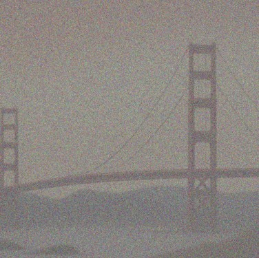
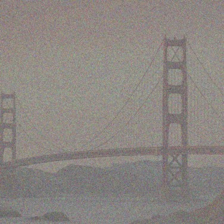
\(t=0.50\)
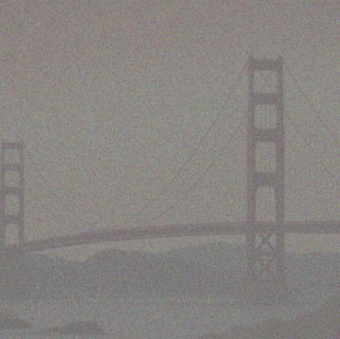
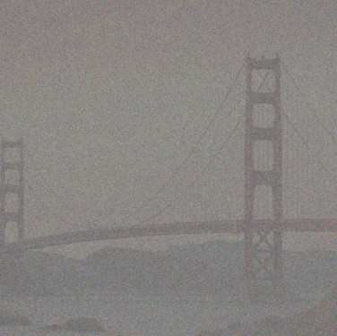
\(t=0.75\)
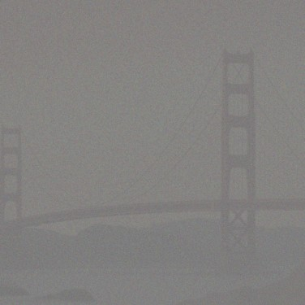
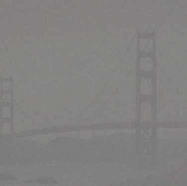
Both updates subtract the noise
Mid-gray is zero, so both updates read as a photographic negative
of the noise laid over a faint bridge. Most of either image is
\(-(1-t)\epsilon\). The model has correctly identified the noise
to remove. Both shrink as \(t\) grows, because there is
less noise left to remove.
The error lives on the edges
The error map lights up along the tower, the cables, and the
ridge line, and stays dark on the smooth sky. Where the image is
smooth, any plausible photograph agrees, and the conditional mean
is right. At edges and fine texture the noisy input does not pin
down exactly where the edge lies, so the mean smears it. This is
the same disagreement that blurs the one-step estimate. It fades
as \(t\) rises and the input becomes less ambiguous.
Part A 1.5
Iterative denoising with Euler steps
Instead of jumping straight to \(t=1\), take a small step along the
predicted velocity, then ask the model again from the new point:
\(x_{t+h}=x_t+h\,v_\theta(x_t,t,c)\). The sampler shortens the last step
so it lands exactly on \(t=1\). Before using the model, I checked the
sampler against a constant velocity field, where the answer is
known: 50 steps from 0, 25 from 0.5, and 4 from 0.93 (the last one
shortened to 0.01). Each run took exactly that many steps and ended at
\(1-t_{\text{start}}\) to within \(10^{-6}\).
@torch.inference_mode()
def euler_sample(x_start, t_start, step_size, velocity):
trajectory = []
x_t = x_start
t = t_start
while t < 1.0:
dt = min(step_size, 1.0 - t)
x_t = x_t + dt * velocity(x_t, t)
t = t + dt
trajectory.append((t, x_t))
return x_t, trajectory
Every one of the 25 states. Drag through them: the grain fades
evenly while the structure is already in place from the first
step.
Euler state \(x_t\)One-step estimate from \(t=0.5\)
Distance to the original along the path (PSNR on the saved
figures). Each state still contains \((1-t)\) of the noise, so the
curve climbs until the last step. Hover, tap, or focus and use the arrow keys to read values.
Original, tower close-up.One step: smooth, a little soft.Euler: crisp, but its own detail.
The sharpest result is not the closest one
Close up, Euler sampling gives the crispest result: the cables and
the X-bracing are sharper than in the one-step estimate. Yet by
PSNR it is slightly farther from the original. The one-step estimate is the posterior mean,
which is exactly what minimizes squared error, and softness is the
price. Repeated small steps let the model commit, step by step, to
one particular sharp image. That image is consistent with the input,
but its sharp edges and fine texture are the model's own guess and do
not line up with the original pixel for pixel. A sharp edge in the
wrong place costs more squared error than a soft edge in the right
one. The Gaussian blur loses on both counts: it keeps
low-frequency noise, and it removes detail the learned model
restores.
Part A 1.6
Generating images from noise
Starting the same sampler at \(t=0\) from pure noise, with 50 Euler
steps and the prompt a high quality photo, generates images
from scratch. Seeds 114 to 118:
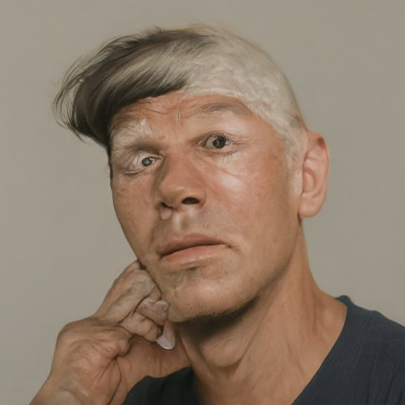
Seed 114
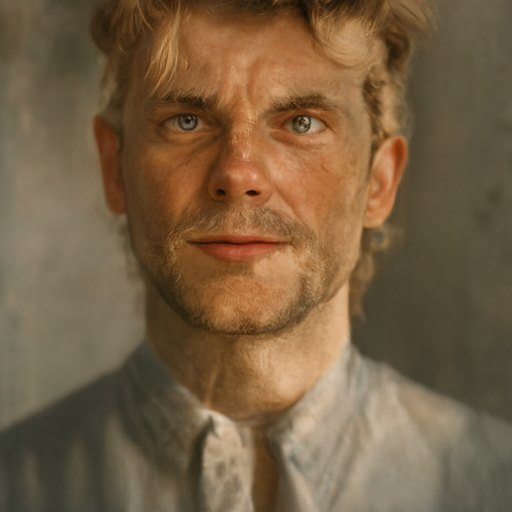
Seed 115
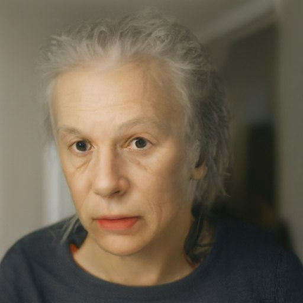
Seed 116Seed 117
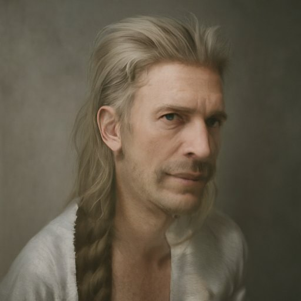
Seed 118
Subject bias
All five are portraits. Nothing in the prompt asks for a person, yet every seed produced a portrait of an adult: four head-and-shoulders close-ups and one waist-up shot (117). To this model, a high quality photo means a portrait, most likely because portraits dominate the photos in its training data that carry captions like that.
Without guidance the portraits are odd. The faces are plausible but unpolished: a half-shaved scalp and a hand pressed to the cheek (114), mottled skin, washed-out color. Following the conditional velocity alone samples the full distribution, including its strange tail. Section 2.1 tightens this.
Part A 2.1
Classifier-free guidance
Classifier-free guidance evaluates the model twice at the same
\(x_t\) and \(t\): once with the prompt and once with the empty
string. It then extrapolates past the conditional prediction,
\(v_{\text{cfg}}=v_c+w(v_c-v_u)\). At \(w=0\) this is ordinary
conditional sampling, and the code checks that exactly.
With the same five noises, guidance turns every sample into a
tidy frontal studio headshot: centered, sharp eyes, smooth skin,
a plain backdrop. RMS contrast nearly doubles (0.17 to 0.31 on
the saved images), and the backgrounds go to deep black, white,
or saturated blue. The term \(v_c-v_u\) points toward what makes
an image match the prompt more than an arbitrary image would.
Scaling it by 7 exaggerates those cues.
What is lost
The odd unguided samples are gone, and so is their variety of
pose, age, and framing. Every guided sample has the same
composition. Pixel colors still differ between seeds, but the
range of images has narrowed to the most prompt-typical corner of
the distribution. The seed fixes less than the prompt does. For seeds 114 and 117 the
light background and the young man carry over from the unguided
run, but for 115, 116 and 118 guidance changes the subject itself,
from a man or an older woman to a younger woman. The subject bias
stays. Guidance
sharpens the model's idea of a high quality photo; it does
not broaden it.
Part A 3.1
Image-to-image editing
SDEdit-style editing starts the sampler partway. The input is moved
back to time \(t_{\text{start}}\) with fresh noise, then integrated to
\(t=1\) with guidance and the generic prompt. The starting time sets
how much of the input survives. At \(t_{\text{start}}=0.02\) the input
is 98% noise and only its coarsest layout and color remain. At 0.5
only fine texture is replaced. All edits share one noise tensor
(seed 114), so differences across a row come from \(t_{\text{start}}\)
alone.
0.10: the outlines and flat fills come back, with rose-like folds still in the petals.
Realism versus faithfulness
Each row moves from the model's imagination to the input. At 0.02
the result is a new photograph that keeps only the input's palette
and the rough placement of light and dark. Both drawings became a
man, the prompt's subject bias again. For the drawings, by 0.04 to
0.06 the model works inside the input's layout. The runner becomes a real
sprinter in the same pose, and the flower becomes a photographic
rose on the same stem. At 0.10 to 0.14 the style returns: outlines
and flat fills, with photographic texture only in the petals. By
0.25 the edit is a faithful, cleaned-up copy. The web painting
resists longest. At 0.02 and 0.04 it becomes a hand holding a
tablet, and from 0.10 to 0.25 its pale, rounded mountains are reread
as a hooded figure sitting cross-legged. Only 0.50 is faithful. Drawings switch
sooner than photographs. A drawing is out of distribution for
a high quality photo, so the model rewrites it whenever it
has room. Once the flat colors and hard edges are fixed in the
starting point, though, there is little left to change.
Part A 3.2
Text-guided editing
The same procedure with a prompt that describes the edit instead of
a high quality photo. The prompt now competes with the input
for control, and the starting time decides who wins.
The Campanile a photograph of a straight sword
Input
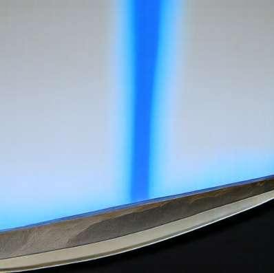
0.020.04
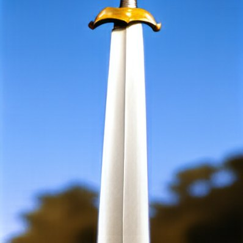
0.06
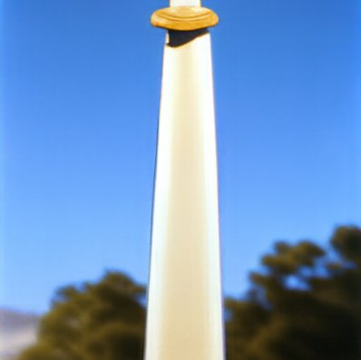
0.10
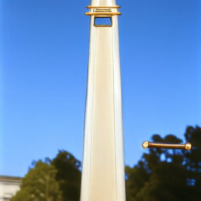
0.14
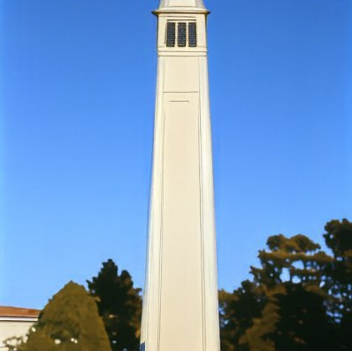
0.250.50
The Golden Gate a photograph of a futuristic cyberpunk city at night
Input0.020.040.060.100.140.250.50
West Lake a macro photograph of chess pieces on a chessboard
Input0.020.040.060.100.140.250.50
CampanileGolden GateWest LakeDashed: edit prompt
How far each edit lands from its input. Solid lines are 3.1
(generic prompt), dashed lines are 3.2 (edit prompt), with the same
noise. At every starting time the edit prompt lands farther from
the input. The gap is largest early (0.02 to 0.14) and closes by
0.5. Hover, tap, or focus and use the arrow keys to read values.
Where the prompt fits the layout, the edit is seamless
The Campanile is a tall pale shaft against blue sky, and so is a
sword. At 0.04 and 0.06 the tower becomes a blade with a gold
crossguard, and the trees blur into a shallow-depth background,
which is how a photo of a sword would look. By 0.10 only a gold cap
remains, at 0.14 it shrinks to a ring near the top, and at 0.25 the
clock-face windows come back. The edit does not fade out gradually. Somewhere between
0.14 and 0.25 the input's own structure becomes too definite to
reinterpret. West Lake is the same story with a longer reach. Its three
stone pagodas give the chess pieces a ready-made place, and the
water gives the board one. From 0.06 to 0.25 the pagodas stand in as
pieces on a checkerboard under the same mountains and sky, and only
at 0.50 do they return to stone. The input's layout decides which
edits are possible. The prompt only picks among them.
Part A 3.3
Visual anagrams
A visual anagram looks like one thing upright and another rotated
180°. At each Euler step the model predicts a guided velocity for the
current image with the first prompt. It also predicts one for the
rotated image with the second prompt, and that prediction is rotated
back. The step follows the average. Both readings are denoised
together, so the final image satisfies both. Rotation by 180° flips
both spatial axes, and the code asserts it is its own inverse.
The prompt pairs are not the ones on the assignment page. Waterfall /
teddy bear and duck / rabbit come from the example prompts in the
Visual Anagrams repository.
There, the first is a three-view illusion and the second a square-hinge
illusion; here both are 180° rotations. Each pair ran with three
seeds, and each row shows the best one.
Upright: “an oil painting of a bowl of fruit”Rotated 180°: “an oil painting of a cat's face”
The strongest pair. Two dark plums become the cat's eyes, the red apple its nose and mouth, and the yellow fruit between them the bridge of its nose. The bowl's rim becomes the brow. The only parts that do not belong to both readings are two pink triangles at the bowl's base: upright they look like stray shadows, rotated they are the cat's ears.
Upright: “an oil painting of a waterfall”Rotated 180°: “an oil painting of a teddy bear”
The white water streaked down the rock becomes the bear's bib, and the golden rocks become a paw. The teddy bear is the stronger reading. Upright, the waterfall works, but the bear's dark nose and eyes are still visible upside down in the foam.
Upright: “a water color of a duck”Rotated 180°: “a water color of a rabbit”
A third pair, from the same source, with a different strategy. The duck's body becomes the rabbit's head, the dark mark on its wing the rabbit's eye, and its orange feet the ears. The duck's head has no role in the rabbit, so it hangs below the rabbit's chin as an upside-down leftover. Watercolor can leave most of the paper blank, so the model only has to share one compact shape.
Why averaging works
Each velocity is a direction of improvement for one reading. Their
average improves both as long as they do not pull the same pixels in
opposite directions, and early in sampling, when only coarse layout
is being decided, there is a lot of room. The best results reuse
regions: a plum is a plausible fruit and a plausible eye, so one
dark disc satisfies both prompts. Pairs work when the two subjects
share a silhouette (a round bowl and a round face) and when both
prompts name the same medium, so neither reading has to fight over
texture or palette. When no region can serve both, the average
settles for a compromise. A piece of one subject survives as a
small, out-of-place detail in the other reading: the bear's nose in the
waterfall, the duck's head under the rabbit. My first attempt, ink-wash mountains / a
young woman, failed in a different way. Ink wash leaves most of the
paper blank, and on all three seeds neither subject got enough
marks to read.
Part A 3.4
Hybrid images
Factorized diffusion builds a hybrid image inside the sampler. Two
guided velocities are computed for the same \(x_t\). The low
frequencies of one prompt's velocity are combined with the high
frequencies of the other's:
\(v=f_{\text{low}}(v_1)+v_2-f_{\text{low}}(v_2)\). The low-pass is a
Gaussian with σ = 16 and a 265-pixel kernel at 512 × 512, the same idea
as the hybrid images in Project 2.
The difference is that the split now happens to the velocity at
every step, not to two finished photographs.
I chose my own prompt pairs instead of the assignment's. Each ran
with three seeds, and each case below shows the best one.
“an oil painting of a fox's face” far, “an oil painting of autumn leaves” near
Full size: close-up prompt “an oil painting of autumn leaves”.64 × 64: distant prompt “an oil painting of a fox's face”.
Up close, a large orange maple leaf with jagged edges and veins, with smaller leaves around it on dark green. Darker shading in the leaf forms two slanted eyes, pale blue patches form the cheeks and muzzle, and the black nose sits where the stem would be. At 64 pixels the jagged edges and veins disappear and only the fox remains. The fox is visible up close too: the low-pass only removes detail finer than about 16 pixels, and eye patches and cheeks are far larger than that.
“an oil painting of an owl's face” far, “an oil painting of tangled tree branches” near
Full size: close-up prompt “an oil painting of tangled tree branches”.64 × 64: distant prompt “an oil painting of an owl's face”.
Up close, two thick trunks cross in an X over a coiled, pale blue knot of branches, with roots spreading below on an ochre ground. Two round orange patches sit in the gaps above the knot. At 64 pixels the bark and twigs disappear. The orange patches become two round eyes, the X of trunks the brows and ear tufts, the pale knot the beak, and the brown roots the chest. This owl is weaker than the fox: shrunk, it is a stylized owl rather than a convincing one.
“a lithograph of an owl's face” far, “a lithograph of tangled tree branches” near
Full size: close-up prompt “a lithograph of tangled tree branches”.64 × 64: distant prompt “a lithograph of an owl's face”.
A failure, kept for comparison: the same subjects as a lithograph. Up close, brown branches on cream paper. At 64 pixels it is still only branches. No owl ever forms. A lithograph is dark lines on blank paper, and lines are high-frequency content, so they come from the branch prompt. The owl prompt controls only the low frequencies, which here are mostly the even paper tone. Switching the medium to oil paint, which covers the whole canvas, is what made the owl above work. A third pair, a tiger's face over a bamboo forest, failed on all three seeds for a related reason. A tiger is recognized by its stripes, which are high-frequency. Low-passed, a tiger's face is just an orange blob, and the warm glow of the bamboo forest absorbs it.
Drag to shrink the first hybrid. Smaller works like farther.
Part B 1.1
A UNet for MNIST
Part B trains everything from scratch on MNIST, with pixels in
\([0,1]\). The network is a small UNet. Two stride-2 convolutions take
the 28 × 28 input down to 7 × 7, average pooling squeezes it to a single
vector, and the decoder mirrors the encoder. Skip connections
concatenate each encoder level onto the decoder at the same
resolution. Every convolutional block is Conv, BatchNorm, and GELU, and Flatten is average pooling plus GELU. Downsampling is
a 3 × 3 convolution with stride 2, upsampling a 4 × 4 transposed
convolution with stride 2. The bottleneck is a 7 × 7 average pool
down and a 7 × 7 transposed convolution back up.
Shapes are channels × height × width with hidden width \(D\).
Gold marks the two places where Part 2 injects time and class.
The blocks after the bottleneck are scaled by \(c\) and shifted by
\(t\) (only scaled by \(t\) in the time-only model).
def forward(self, x):
e1 = self.enc1(x) # ConvBlock(1, D) D x 28 x 28
e2 = self.enc2(e1) # DownBlock(D, D) D x 14 x 14
e3 = self.enc3(e2) # DownBlock(D, 2D) 2D x 7 x 7
f = self.flatten(e3) # AvgPool2d(7) + GELU 2D x 1 x 1
d1 = self.unflatten(f) # ConvTranspose2d(k=7) 2D x 7 x 7
d1 = torch.cat([d1, e3], dim=1)
d2 = self.dec1(d1) # UpBlock(4D, D) D x 14 x 14
d2 = torch.cat([d2, e2], dim=1)
d3 = self.dec2(d2) # UpBlock(2D, D) D x 28 x 28
d3 = torch.cat([d3, e1], dim=1)
d4 = self.dec3(d3) # ConvBlock(2D, D)
return self.out(d4) # Conv2d(D, 1, 3)
Part B 1.2
Training a single-step denoiser
The first task is plain denoising: given \(z=x+\sigma\epsilon\),
predict \(x\), with an L2 loss. Each row below adds one noise level
to the same ten training digits, with a single \(\epsilon\) shared
across rows.
σ = 0.00.20.40.50.60.81.0
Noising process, \(z=x+\sigma\epsilon\), clipped to \([0,1]\) for display.
The denoiser is trained at σ = 0.5 with \(D=128\), batch size 256, and
Adam at \(10^{-4}\) for 5 epochs. The noise is drawn fresh for every
batch, after the dataloader, so the network never sees the same
noisy digit twice.
for epoch in range(num_epochs):
for i, (images, _) in enumerate(tqdm(train_loader)):
images = images.to(device)
noise = torch.randn_like(images)
noisy_images = images + noise_level * noise
outputs = model(noisy_images)
loss = criterion(outputs, images)
optimizer.zero_grad(); loss.backward(); optimizer.step()
train_losses.append(loss.item())
Training loss per optimizer step, with a 100-step moving average.
The same ten test digits and the same noise after each epoch. After
epoch 1 every digit is legible, but faint speckles remain in the
background, the thin 1 has a stray crossbar, and the loop of the 5 is
a grey smudge. By epoch 5 the background is black and the 1 is a
single stroke. The 5 is still smudged. Its noisy input really is
ambiguous, so the MSE-trained network outputs a grey average of the
plausible strokes.
Out-of-distribution noise levels
The same σ = 0.5 denoiser, applied to one test digit at every noise
level, with one shared \(\epsilon\):
σ = 0.00.20.40.50.60.81.0
Top: input \(z\). Bottom: output \(D_\theta(z)\).
Generalizing below and above the training noise
Below σ = 0.5 the denoiser does fine: less noise means an easier
version of the same task, and at σ = 0 it simply returns the digit.
Above 0.5 the outputs hold up for a while. At 0.6 and 0.8 the 7 is
still clean apart from a few faint specks. At 1.0 the noise is as
strong as the digit itself. A grey haze surrounds the 7, and a clump
of noise becomes a short extra bar across its stem. The network
learned how much noise to expect, so it reads the extra noise as
digit structure. The flow model in
Part 2 avoids this by training on every noise level at once and
being told which one it is facing.
Denoising pure noise
Now the input is pure noise, \(z=\epsilon\), independent of the
target digit. A fresh \(D=128\) UNet is trained with the same settings
for 5 epochs.
The loss stops at 0.067 within about 150 steps and never moves again.
After epoch 1. Top: input noise. Bottom: output.After epoch 5.
Mean of all 60,000 training digits, computed directly.
0123456789
What patterns appear, and why
Every output is the same image. Ten different noise inputs give ten identical blurry blobs, an overlay of many digits with a bright core. The pattern is already final after epoch 1.
The blob is the training set's centroid. Since \(z\) is independent of \(x\), the input tells the network nothing about the target. For any fixed output \(y\), the expected loss \(\mathbb{E}_x\lVert y-x\rVert^2\) is minimized by \(y=\mathbb{E}[x]\), the pixel-wise mean of all training digits. The network learns to ignore its input and output that constant. The mean image I computed from the dataset (above) matches the outputs. Of the class means, 5, 8, and 9 lie closest to it.
The loss floor is the data's variance. Predicting the mean leaves the average per-pixel variance of MNIST, which I measured as 0.0673, exactly where the curve flattens. Predicting all-black would cost 0.112. No input-independent output can do better. This is the extreme case of the blurry one-step estimates in Part A: with no information, the conditional mean is the global mean.
Part B 2.1–2.3
Flow matching with a time-conditioned UNet
The OOD test broke down at σ = 1.0 because the denoiser knew only one noise level.
The pure-noise test showed that a single step from noise can only
reach the mean. Flow matching addresses both. It trains on the whole
path \(x_t=(1-t)x_0+tx_1\), with \(t\sim U[0,1]\),
tells the network the time, and samples with many small steps instead
of one jump. The target is the path's velocity \(x_1-x_0\), not the
clean image. A small fully connected block maps
the scalar \(t\) to one channel vector that multiplies the
bottleneck and another that multiplies the first decoder block.
Training uses \(D=64\), batch size 64, and Adam starting at
\(10^{-2}\). An exponential schedule multiplies the learning rate by
\(0.1^{1/10}\) after every epoch, so it reaches about
\(1.3\times10^{-3}\) in the last of 10 epochs.
Time-conditioned UNet, training loss over all 9,380 steps.
After one epoch the samples are squiggles with the stroke width of
digits but no identity. By epoch 5 roughly half are recognizable.
By epoch 10 the strokes are clean and thin, but about a quarter of
the samples are still shapes between classes: a 4 crossed with a 9,
a 6 that does not close, a 2 that becomes a smile. The exact unconditional flow would still split cleanly between
classes (try None with 50 steps in the demo above). But without a
label, the field has to change direction sharply where samples
decide between digits, and a small network trained for 10 epochs
smooths over those boundaries. Samples that sit near one stall
between classes. A class label removes that hard decision.
Part B 2.4–2.6
Class conditioning and guidance
Adding the digit's label removes that ambiguity. A one-hot class
vector goes through two more FC blocks and scales the same two
feature maps, while time now shifts them:
\(c_1\odot\text{unflatten}+t_1\) and \(c_2\odot\text{up}_1+t_2\). With
probability 0.1 the class vector is zeroed during training, so the
same network also learns the unconditional velocity. Sampling uses
that for classifier-free guidance with \(\gamma=5\) and 300 Euler steps.
Training otherwise matches 2.2: \(D=64\), batch size 64, Adam at
\(10^{-2}\) with the same exponential schedule, 10 epochs.
c = F.one_hot(c, num_classes=self.num_classes).float()
if mask is not None:
c = c * mask.unsqueeze(1) # mask == 0: unconditional
d1 = self.unflatten(f) * c1 + t1
d2 = self.dec1(torch.cat([d1, e3], dim=1)) * c2 + t2
mask = torch.rand(N, device=device) > p_uncond # keep the label 90% of the time
for i in range(num_ts): # class_fm_sample, 300 steps
t = torch.full((N,), i * dt, device=device)
v_c = unet(x_t, c, t)
v_u = unet(x_t, c, t, uncond_mask)
x_t = x_t + dt * (v_u + guidance_scale * (v_c - v_u))
Class-conditioned UNet with the exponential scheduler.
Four samples of each digit, \(\gamma=5\), the same seed for every grid
Even after one epoch every grid column is the requested digit. The
strokes are blotchy, but the classes are never in doubt, which the
time-only model never managed. The label settles the class from the first step, and guidance with
\(\gamma=5\) amplifies it, pushing each sample away from the
unconditional average. Without a run at \(\gamma=1\) I can't separate
the two effects. By
epoch 10 the digits are clean, with natural variation in slant and
thickness within each column.
Removing the scheduler
No scheduler: constant learning rate \(10^{-3}\) with AdamW.
How I compensated for the missing scheduler
What the scheduler was doing. It starts large, so the first epoch makes fast progress, and decays by 10× so the last epochs take small steps and settle. Removing it while keeping \(10^{-2}\) would leave every late update large, and the weights would never settle.
A lower constant rate. I used \(10^{-3}\), close to where the scheduled run ends. It is small enough to converge without decay. It also avoids the scheduled run's loss spike at the start, and its epoch-1 samples are already cleaner.
AdamW with weight decay \(10^{-4}\). A mild regularizer that keeps the weights from drifting while the step size stays constant. Everything else is unchanged: 10 epochs, batch size 64, \(p_{\text{uncond}}=0.1\), the same seed and \(\gamma=5\).
Result. The epoch-10 grids are equally clean, and every digit is legible in both. Two of the forty no-scheduler samples carry a stray dot (a 7 and an 8). Possibly a sign that the constant step size never let the weights fully settle.
What I learned
Almost everything in this project comes back to one fact: a network
trained with squared error predicts an average.
The one-step estimate is blurry because it averages every clean
image consistent with the input. The pure-noise denoiser outputs the
mean digit because noise rules nothing out. The time-only model
produces ambiguous digits where its smooth approximation of the
average blurs the split between classes. Euler sampling works because each small step
asks for a new average from a point where fewer answers remain, so
the average sharpens into a single sample. Guidance, anagrams,
hybrids, and SDEdit are all ways of changing which average the
model is asked for: with a stronger prompt, with two prompts and a
rotation, with two prompts split by frequency, or from a starting
point that already rules most answers out. The most practical
lesson was that PSNR and visual quality disagree. Euler's sharp
result scored below the blurry estimate, so judging these models
takes both the numbers and the pictures.